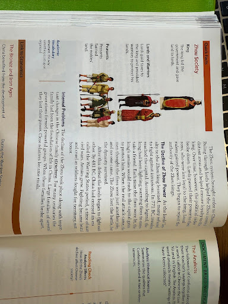

Above is an image from our textbook when we were learning about the Zhou dynasty. I was giving a lecture about the dynasty and the social hierarchy system used there. In the first hour of the day, I mainly just read it out of the book and then summarized it for them. At the end of each lesson, I always like to talk with my mentor teacher about how I can improve my lesson from hour to hour. The lesson seemed to drag on a bit during the lecture, and we weren’t very sure that the kids were engaged like they should have been. We decided that I should create a caste system pyramid with the class on the whiteboard, as we had done in prior units for almost every civilization we had covered. In later hours, students were much more engaged, and I was able to ask multiple guiding questions as we made the pyramid, which led to a much more engaged classroom. Debriefing and analyzing what went well and what didn’t as an educator is crucial in becoming a better educator and having a more engaged, interesting classroom.